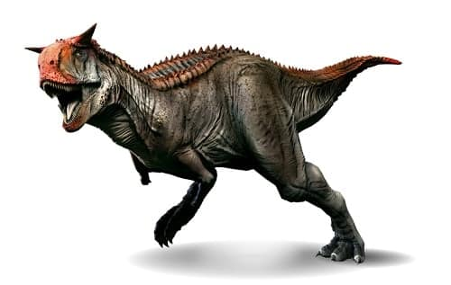
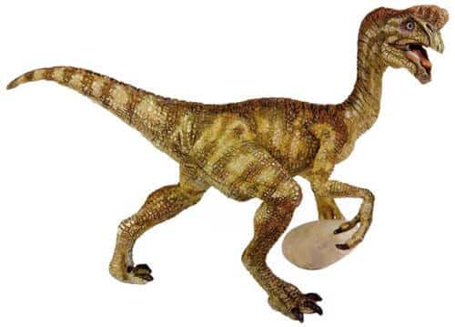
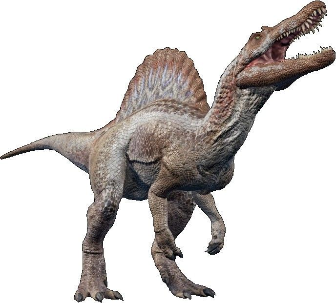

Baryonyx walkeri ("garra pesada de Walker") es la única especie conocida del género extinto Baryonyx de dinosaurio terópodo espinosáurido, que vivió a mediados del período Cretácico, hace aproximadamente entre 130 y 125 millones de años durante el Aptiense, en lo que es hoy Europa. El primer ejemplar fue encontrado en Inglaterra, y posteriormente reportado en la localidad de Igea, La Rioja, al norte de España, aunque tras el descubrimiento del nuevo espinosáurido español las evidencias de Baryonyx en España podrían ser inválidas debido a que se está poniendo en duda y estos restos de Baryonyx en Castilla y León podrían pertenecer a Vallibonavenatrix, un espinosáurido más emparentado con Spinosaurus.
Baryonyx era un predador de gran tamaño que midió unos 9.75 metros de longitud, 2.55 de altura a la cadera y entre 1.7 y 2.7 toneladas, las dimensiones aproximadas han ido variando desde hace mucho , con la última tecnología se estimaron las anteriores dimensiones. El hecho que los elementos del cráneo y la columna vertebral del espécimen holotipo de B. walkeri, NHM R9951, no parecen haber estado fusionados, lo que sugiere que el individuo no estaba completamente crecido, y el animal maduro pudo haber sido más grande, como sucede en el relacionado Spinosaurus, que alcanzó 15 metros de largo y 10 toneladas. Por otra parte, el esternón fusionado del espécimen indica que puede haber estado bastante madura.123 El segundo mejor espécimen conservados, ML 1190, era aproximadamente el mismo tamaño que el esqueleto holotipo.
Baryonyx es un terópodo muy inusual. La estructura de su pelvis sugiere que era bípedo cuando se desplazaba de un lugar a otro. Al igual que los dromeosáuridos, Baryonyx tenía un par de grandes garras curvas, de alrededor de 35 centímetros, pero al contrario que éstos, no se situaba en los pies, sino en las manos. La estructura ósea sugiere la existencia de una poderosa musculatura en las extremidades anteriores, mucho mayor que en la mayoría de los terópodos. El largo cuello era muy poco flexible y no tenía la forma en S de muchos otros terópodos. El cráneo se insertaba en un ángulo agudo y no recto, como es común en dinosaurios similares. Las grandes mandíbulas eran singularmente cocodrilianas en aspecto y tenían 96 dientes, el doble que la mayoría de sus parientes. 64 de estos dientes se situaban en la mandíbula inferior y 32, más largos, en la superior. Es posible que el hocico presentase una pequeña cresta. La mandíbula superior tenía un ángulo agudo cerca del hocico, una característica vista en cocodrilos que ayuda a evitar que la presa se escape. Una característica similar también se ve en los alcaudones.
 |
 |
 |
|  |
 |
 |